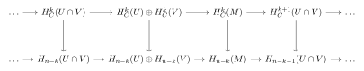
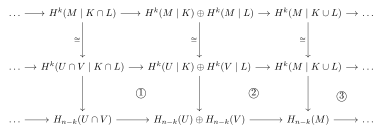
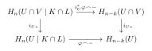
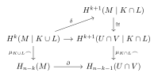

This is me rewriting the proof just for it to stick better in memory, it can be found in its entirety in Hatcher.
Let us prove the following result,
Theorem 1.1
Given any orientable compact manifold \(X\) (\(n\)-dimensional) we have that \(H^k(X) \cong H_{n - k}(X)\).
It turns out, that proving this result is more natural by proving an even more general result,
Theorem 1.2
Given any \(R\)-orientable manifold \(X\) (\(n\)-dimensional) it holds that \(H_C^k(X;R) \cong H_{n - k}(X;R)\), where the isomorphism is given by the cap product with the fundamental class (i.e. induced by \(\varphi \mapsto \varphi \frown \mu_K\) on \(H^k(X \mid K; R)\) for compact \(K \subseteq X\)).
Trivially, per definition of cohomology with compact support one has Theorem 1.1 as a special case for compact manifolds. The usefuless of this more general statement boils down to the capability to perform induction on open sets, since compactness allows us to extract finite covers.
The \(R\)-orientability condition is what allows the proof to work, another important result that will be heavily used is the following.
Proposition
Given any \(R\)-orientable \(n\)-manifold \(M\) and any compact \(K \subseteq M\), there exists a unique fundamental class \(\mu_K \in H_n(M \mid K; R)\) such that the image of \(\mu_K\) under the inclusion map \(H_n(M \mid K; R) \rightarrow H_n(M|x; R)\) goes to the orientation of \(M\) at \(x\) for all \(x \in K\).
The main element of the proof of the theorem is the following commutative (up to sign) diagram.
Lemma 1.3
Given any open sets \(U\) and \(V\), let \(M = U \cup V\), then the following diagram is commutative (up to sign),

Thus, observe that if we know the theorem to be true for \(U\), \(V\) and \(U \cap V\) it must be true for \(U \cup V\) (by the Five Star Lemma since almost all the vertical arrows in the diagram above will become isomorphisms), thus all that would be left is to verify the lemma for the base open sets of the manifold, which amounts to only verifying it for \(\mathbb{R}^n\) (since locally a manifold is homeomorphic it).
Let us now attempt to prove the lemma. The first step is to use the definition of the cohomology with compact support via the colimit of relative cohomologies, thus obtaining the diagram. Let \(K \subset U\) and \(L \subset V\) be two compact subsets, then consider the diagram below,

where the vertical isomorphisms come from the Excision axiom. Showing commutativity of this diagram (up to sign) will result in commutativity of its corresponding colimit diagram of desire. The proof requires showing commutativity of the three boxes \(1\), \(2\) and \(3\).
Proposition 1.4
The \(1\)st square commutes (from here on I will omit clarrifying that it is up to sign).
Proof. Indeed, if \(\varphi \in H^k(M \mid K \cap L)\), then the left-down path results in \(\varphi \frown \mu_{K \cap L} \in H_{n-k}(U \cap V)\). Mapping this result across the bottom horizontal arrow (which is induced by the inclusions \(i_U: U \cap V \hookrightarrow U\) and \(i_V: U \cap V \hookrightarrow V\)) yields \((i_{U*}(\varphi \frown \mu_{K \cap L}), -i_{V*}(\varphi \frown \mu_{K \cap L}))\) in \(H_{n-k}(U) \oplus H_{n-k}(V)\).

By the naturality of the cap product with respect to continuous maps, we have the identity \(i_{U*}(i_U^*\varphi \frown \mu_{K \cap L}) = \varphi \frown i_{U*}(\mu_{K \cap L})\). Thus, per uniqueness of the fundamental class \(i_{U*}(\mu_{K \cap L})\) is the image of \(\mu_K\) under \(H_n(U \mid K) \rightarrow H_n(U \mid K \cap L)\) and \(i_{V*}(\mu_{K \cap L})\) is the image of \(\mu_L\) under \(H_n(V \mid L) \rightarrow H_n(V \mid K \cap L)\). Following the right-down path, the top horizontal map restricts \(\varphi\) to \((\varphi, -\varphi)\). Pushing this down via the cap product (using naturality once more for \((U, U - K) \hookrightarrow (U, U - K \cap L)\) and similarly for \(V\)) directly yields \((\varphi \frown \mu_K, -\varphi \frown \mu_L)\), thus the box commutes!
Proposition 1.5
The \(2\)nd square commutes.
Proof. The top horizontal map is given by \((\alpha, \beta) \mapsto \alpha + \beta\), thus one needs to show that \(\alpha \frown \mu_K + \beta \frown \mu_L = (\alpha + \beta) \frown \mu_{K \cup L}\) in \(H_{n - k}(M)\), which follows from \(\mu_{K \cup L}\) mapping to \(\mu_K\) and \(\mu_L\) under \(H_n(M \mid K \cup L) \rightarrow H_n(M \mid K)\) and \(H_n(M \mid K \cup L) \rightarrow H_n(M \mid L)\) respectively (by uniqueness of the fundamental class), naturality and distributivity of the cap product.
The third square is in some sense the hardest to prove.
Proposition 1.6
The \(3\)rd box commutes.
Proof. Let us explicitly consider the square with the Excision maps,

Let us consider an arbitrary element \(\varphi \in H^k(M |K \cup L)\), then the Mayer–Vietoris map is given by writing \(\varphi = \varphi_U + \varphi_V\) (where \(\varphi_U\) vanishes on chains in \(M - K\) and \(\varphi_V\) vanishes on chains in \(M - L\)), then since \(\delta \varphi = \delta \varphi_U + \delta\varphi_V = 0\) (since \(\varphi\) is a cocycle) we know that \(\delta \varphi_U = -\delta \varphi_V\), which implies that both vanish on chains in \(M - K \cap L\), then \(\varphi \mapsto \delta \varphi_U\).
The trick is to expand \(\mu_{K \cup L}\) via barycentric subdivision by considering the open cover \(M = (U - L) \cup (V - K) \cup (U \cap V)\), then we may write, \[ \mu_{K \cup L} = \alpha_{U - L} + (\alpha_{V - K} + \alpha_{U \cap V}) \] where the second term clearly lies in \(V\), thus will be ignored by the Mayer-Vietoris map. Thus, the top-right path to \(H_{n - k - 1}(U \cap V)\) will be given by \(\mu_{K \cap L} \frown \delta\varphi_U\). To find the bottom path result, let us first apply the vertical cap product, \[ \mu_{K \cup L} \frown \varphi = \alpha_{U - L} \frown \varphi + (\alpha_{V - K} + \alpha_{U \cap V}) \frown \varphi \] observe how the second term lies in \(V\), thus may be ignored (under the Mayer-Vietoris map), thus applying \(\partial\) we obtain, \[ \partial(\alpha_{U - L} \frown \varphi) = (-1)^{k + 1}(\partial \alpha_{U - L} \frown \varphi - \alpha_{U - L} \frown \delta \varphi) = (-1)^{k + 1}(\partial \alpha_{U - L} \frown \varphi) \] again we may replace \(\varphi\) by \(\varphi_U\) since \(\partial \alpha_{U - L}\) lies in \(M - L\) where \(\varphi_V\) vanishes and thus obtain \((-1)^{k + 1} (\partial \alpha_{U - L} \frown \varphi_U)\).
To connect this to the top path, observe that the sum \(\alpha_{U - L} + \alpha_{U \cap V}\) represents the fundamental class \(\mu_K\). Since \(\partial(\alpha_{U - L} + \alpha_{U \cap V}) = \partial \mu_{K \cup L} - \partial \alpha_{V - K}\) lies in \(M - K\) and \(\varphi_U\) vanishes on chains in \(M - K\), we have the relation \(\partial(\alpha_{U - L} + \alpha_{U \cap V}) \frown \varphi_U = 0\), which forces the identity \(\partial \alpha_{U - L} \frown \varphi_U = - \partial \alpha_{U \cap V} \frown \varphi_U\) which further simplifies our bottom path as \((-1)^{k+2}(\partial \alpha_{U \cap V} \frown \varphi_U)\).
Thus, we only need to show that \(\mu_{K \cap L} \frown \delta \varphi_U = \pm (\partial \alpha_{U \cap V} \frown \varphi_U)\), and since \(\alpha_{U \cap V}\) represents \(\mu_{K \cap L}\) (its boundary lies in \(M - K \cap L\) and \(\alpha_{U - L}\), \(\alpha_{V - K}\) avoid \(K \cap L\)), we only need to show that \(\alpha_{U \cap V} \frown \delta \varphi_U\) and \(\partial \alpha_{U \cap V} \frown \varphi_U\) have the same homology classes in \(H_{n - k - 1}(U \cap V)\), to do this consider the chain \(\alpha_{U \cap V} \frown \varphi_U\) in \(U \cap V\), then their difference is a boundary, \[ \partial(\alpha_{U \cap V} \frown \varphi_U) = (-1)^{k + 1}(\partial \alpha_{U \cap V} \frown \varphi_U - \alpha_{U \cap V} \frown \delta \varphi_U) \] which implies the desired result!
Now, let us perform the final induction step. Let us show the theorem for any open \(Y \subset \mathbb{R}^n\), observe that we first need the following.
Lemma 1.7
If \(M = \bigcup_i U_i\) for a directed family of open sets \(U_i\) (e.g. \(U_1 \subseteq U_2 \subseteq \ldots\)) and \(D_{U_i}\) is an isomorphism for all \(i\), then so is \(D_M\).
Proof. Every compact \(K \subseteq M\) lies in some \(U_i\), thus \(H^k_C(M;R) = \varinjlim H^k_C(U_i;R)\), and since every singular chain has compact image also \(H_{n - k}(M;R) = \varinjlim H_{n - k}(U_i;R)\). The maps \(D_{U_i}\) commute with the inclusions (by naturality of the cap product, as in the \(1\)st square), thus \(D_M = \varinjlim D_{U_i}\) is a colimit of isomorphisms, hence an isomorphism.
We now proceed in three steps.
Finally, for a general \(M\) consider the collection of open \(U \subseteq M\) for which \(D_U\) is an isomorphism, ordered by inclusion. It is non-empty (it contains every chart by step \(3\)) and every chain has an upper bound, namely its union (by the directed union lemma), thus by Zorn's lemma there is a maximal such \(U\). If \(U \neq M\), pick a chart \(V \cong \mathbb{R}^n\) around a point of \(M - U\), then \(V\) and \(U \cap V\) (an open subset of \(V \cong \mathbb{R}^n\)) satisfy the theorem by step \(3\), hence by the Mayer–Vietoris lemma and the five lemma so does \(U \cup V \supsetneq U\), contradicting maximality. Thus \(U = M\). \(\blacksquare\)